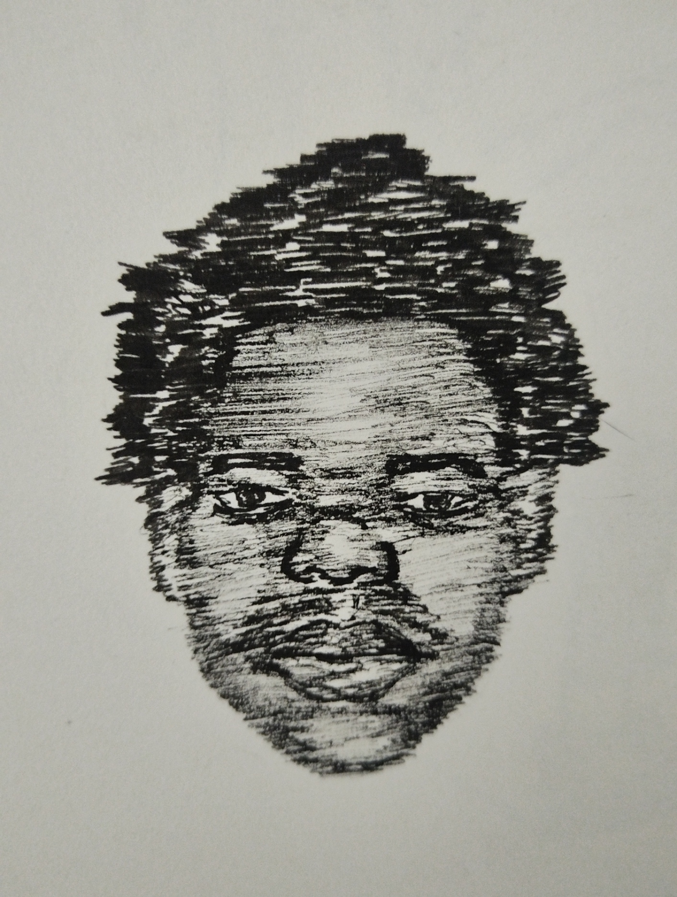

Tshengwane Is a multi-media artist, but mainly a Sculptor and a Printmaker. He makes art that speaks to the social issues of the world, he takes inpiration from the regular walks he takes from wherever he lives. he uses his inspirations as background of the subjects of his artworks. The root ideas of his works come from daydreaming and dreams. In summary, Tshengwane uses images of places he lives at and intergrates it with issues of society.
